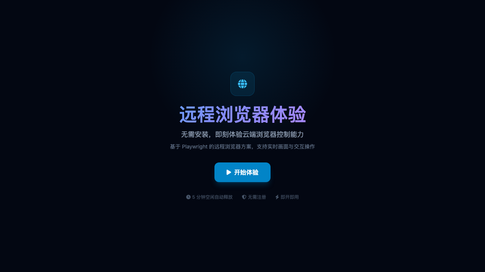
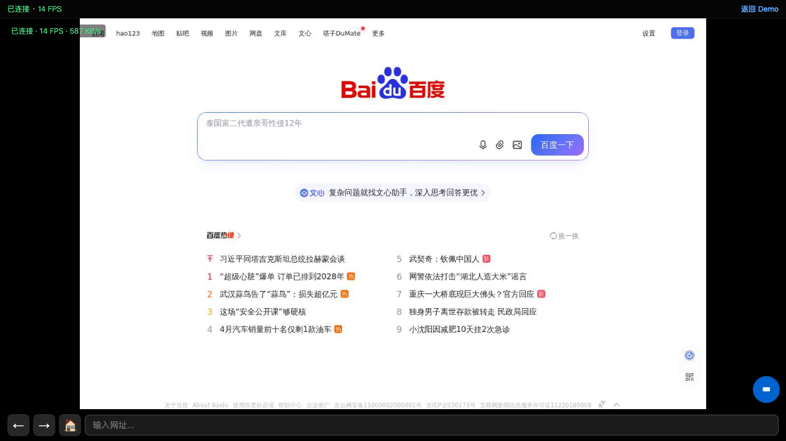
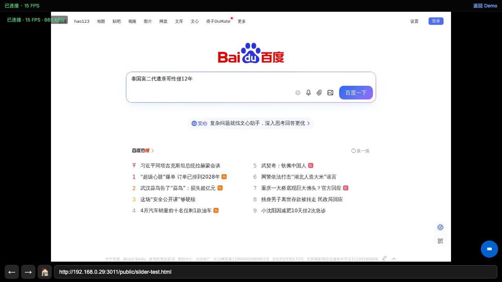
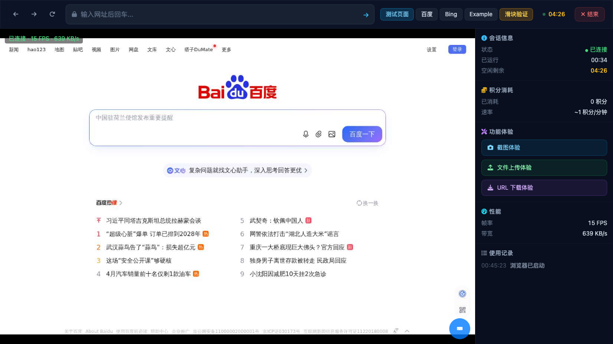
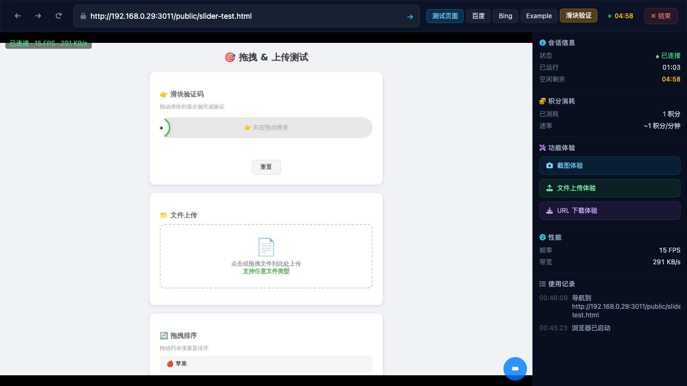
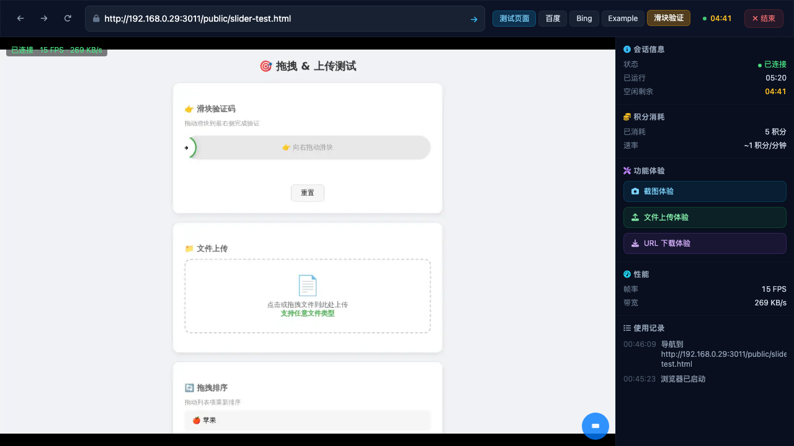
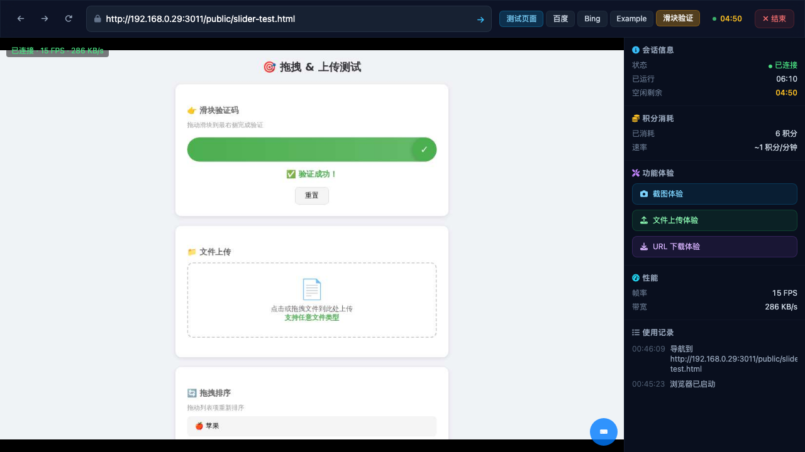

在 375x812 移动端视口下访问 /demo，点击"开始体验"后页面成功重定向到
/browser-viewer/index.html?sessionId=...&token=...。
WebSocket 连接正常，帧流传输正常 (15 FPS, 684 KB/s)。


移动端 viewer 底部 URL 栏填入了 slider-test.html URL，但远程浏览器画面仍停留在百度首页。 navigateTo() 方法在 standalone viewer 模式下可能不生效，或需要额外等待时间。

PC 端 Demo (1280x800) 正常启动，远程浏览器帧流传输正常 (15 FPS, 639 KB/s)。
upload-session API 问题：该接口要求 session.status === 'connected'，但 session 一直保持 'created' 状态。
机器服务未通过 gRPC 上报 connected 状态。
替代方案：使用 upload-temp (JWT auth) + inject-file (path: data/temp/...) 成功注入文件。
inject-file API 返回 "文件注入成功"。



使用 BrowserViewer.instance.send() 发送 mousedown → mousemove(25步) → mouseup 事件序列， 远程浏览器滑块成功拖拽到最右侧，显示 "✓ 验证成功！" 绿色确认文字。

移动端 viewer 页面包含：
- 顶部状态栏：CPU/RAM 指标 + "返回 Demo" 链接
- 底部导航栏：← → 🏠 按钮 + URL 输入框（"输入网址..."）
- 连接状态：已连接 · 15 FPS · 684 KB/s
- 键盘按钮：右下角蓝色圆形 ⌨ 按钮
CDN 资源加载失败: cdn.tailwindcss.com (status 0), cloudflare font-awesome (status 0)upload-session API: "会话不是活跃状态" (session.status = 'created', 需要 'connected')| 模块 | 状态 | 最后验证 |
|---|---|---|
| demo | verified | 2026-05-13 |
| viewer | verified | 2026-05-13 |